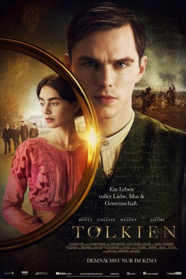

#11621 Tolkien
 
 IMDB-Wertung: 6.9 / 10
IMDB-Wertung: 6.9 / 10  Tomatometer: 51
Tomatometer: 51  Metascore: 48
Metascore: 48 
Tolkien erzählt von den prägenden Jugendjahren des visionären Autors, in denen er Freundschaft, Mut und Inspiration inmitten einer Gemeinschaft von Gleichgesinnten an seiner Schule findet. Zusammen erleben sie Liebe und Verlust, von Tolkiens turbulenter Umwerbung seiner großen Liebe und Muse Edith Bratt, bis hin zum Ausbruch des Ersten Weltkriegs, der die „Gefährten“ auseinander zu reißen droht. All diese Erfahrungen inspirieren Tolkien zu seinen weltbekannten Mittelerde-Romanen.
Jahr: 2019
Dauer: 112 Minuten
FSK: 12
Land: USA Studio: Fox Searchlight PicturesTonspuren: DD5.1 - ,
Untertitel: Deutsch,
Auflösung: 1080p (1920x800) Größe: 9420 MB
Genre: Drama, Krieg, Biographie
Regisseur: Dome Karukoski
Drehbuch: David Gleeson, Stephen Beresford
Soundtrack: Thomas Newman
Darsteller:
 Nicholas Hoult als J.R.R. Tolkien
Nicholas Hoult als J.R.R. Tolkien Craig Roberts als Private Sam Hodges
Craig Roberts als Private Sam Hodges- Harry Gilby als J.R.R. Tolkien (Young)
 Colm Meaney als Father Francis
Colm Meaney als Father Francis- Laura Donnelly als Mabel Tolkien
- Guillermo Bedward als Hilary Tolkien (Young)
- Nia Gwynne als Bronwen
 Pam Ferris als Mrs. Faulkner
Pam Ferris als Mrs. Faulkner Adrian Schiller als English Master
Adrian Schiller als English Master- Ty Tennant als Christopher Wiseman (Young)
- Tony Nash als Mackintosh
- Owen Teale als Headmaster Gilson
- Mimi Keene als Edith Bratt (Young)
- Sian Crisp als Waitress
- Patrick Gibson als Robert Gilson
- Anthony Boyle als Geoffrey Smith
- Tom Glynn-Carney als Christopher Wiseman
 Lily Collins als Edith Bratt
Lily Collins als Edith Bratt- David Bromley als Schoolmaster
- Holly Dempster als Beryl
 Genevieve O'Reilly als Mrs. Smith
Genevieve O'Reilly als Mrs. Smith Derek Jacobi als Professor Wright
Derek Jacobi als Professor Wright- Joel Phillimore als Lieutenant
- Robert Cox als Sailor (uncredited)
- Adam Darlington als Bargeman (uncredited)
- Gary Davies als Professor / Middle Class Gent (uncredited)
- Patricia Hammond als Edwardian Singer (uncredited)
- Nigel Lowe als Blacksmith (uncredited)
 Aaron Neil als Sergeant Kahn (uncredited)
Aaron Neil als Sergeant Kahn (uncredited)- John Alan Roberts als WW1 British Sergeant / sikh Sergeant (uncredited)
- Al Bollands als First Soldier
- Kallum Tolkien als Second Soldier
- Albie Marber als Robert Gilson (Young)
- Adam Bregman als Geoffrey Smith (Young)
- Michael Bryceson als Goodson-Thomas
- Andrew Bissell als Rugby Coach
- Antony Barlow als Maître d'
- James MacCallum als Hilary Tolkien
- David Puckridge als Box Office Man
- Lara Maguire als Rose
- Jane Dixon-Rowland als Mary
- David Birkbeck als Porter
- Colin Burnie als Professor #1
- Andy Orchard als Professor #2
- Frank Kerr als Drunken Student
- Rob Rhys Bond als Photographer
- John Bradfield als Student
- Mia Woods als Priscilla Tolkien (Child)
- Sienna Woods als Priscilla Tolkien (Child)
- Paul Gurcel Escudero als Michael Tolkien (Child)
Datei: X:\2019(N-Z)\Tolkien (2019, FSK12, 1920x800).mkv seit 13.08.2019
Festplatte: HD 2018(G-Z)-2019(A-Z)
 Es gibt insgesamt 62 Filme in der Gruppe '2019(N-Z)'
Es gibt insgesamt 62 Filme in der Gruppe '2019(N-Z)'